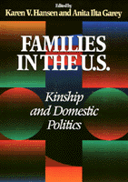

Leading feminist scholars contemplate the complexity of today's American families
Leading feminist scholars contemplate the complexity of today's American families


 Leading feminist scholars contemplate the complexity of today's American families
Leading feminist scholars contemplate the complexity of today's American families

|  |
Families in the U.S.Kinship and Domestic Politicsedited by Karen V. Hansen and Anita Ilta Gareypaper EAN: 978-1-56639-590-8 (ISBN: 1-56639-590-9) |
This engaging collection of essays attempts to do justice to the complexity of contemporary families and to situate them in their economic, political, and cultural contexts. The editors introduce this wide-ranging collection with a provocative analytical introduction, setting the stage with a recognition that families may look very different even to those inside the same family. These cutting-edge scholars explore the ways in which family life is gendered and reflect on the work of maintaining family and kin relationships, especially as social and family power structures change over time.
The book includes a guide to topics (from Adoption and African-American Families to Work-Family Tensions and Working-Class Families) that should prove useful to teachers, students, and researchers.
Excerpt available at www.temple.edu/tempress
Introduction
I. Family Composition
A. Defining and Analyzing Families
1. Redefining Families: Who's In and Who's Out – Martha Minow
2. Motherhood Under Patriarchy – Barbara Katz Rothman
3. Family, Feminism, and Race in America – Maxine Baca Zinn
4. Adoption and Kinship – Katarina Wegar
B. Family Structure and Accordion Households
5. Household Structure and Family Ideologies: The Case of Vietnamese Refugees – Nazli Kibria
6. Mortality Decline in the Twentieth Century and Supply of Kin over the Life Course – Peter Uhlenberg
7. Fertility on the Frontier: Women, Contraception, and Community – Anita Ilta Garey
8. Interpreting the African Heritage in Afro-American Family Organization – Niara Sudarkasa
II. Families Within Society
A. Families and the Economy
9. Time Squeeze: The Extra Month of Work – Juliet B. Schor
10. Capitalism and Gay Identity – John D'Emilio
11. Bread Before Roses: American Workingmen, Labor Unions, and the Family Wage – Martha May
12. Race, Poverty, and Women's Aging – Julianne Malveaux
13. Affluence and Poverty in Feeding the Family – Marjorie L. DeVault
14. Gender, Class, Family, and Migration: Puerto Rican Women in Chicago – Maura I. Toro-Morn
15. Children's Changing Access to Resources: A Historical Perspective – Donald J. Hernandez
B. Families and Community
16. The Anti-Social Family – Michèle Barrett and Mary McIntosh
17. The Place of Kinfolk in Personal Community Networks – Barry Wellman
18. Housewife and Gadder: Themes of Self-Sufficiency and Community in Eighteenth-Century New England – Laurel Thatcher Ulrich
19. Mexican American Women Grassroots Community Activists: Mothers of East Los Angeles – Mary Pardo
III. Webs of Family Relationships
A. Mothering, Motherhood, and Mothers
20. Why Women Mother – Nancy J. Chodorow
21. Chicana/o Family Structure and Gender Personality: Chodorow, Familism, and Psychoanalytic Sociology Revisited – Denise A. Segura and Jennifer L. Pierce
22. Catching Sense: Learning from Our Mothers to Be Black and Female – Suzanne C. Carothers
23. Jewish Lesbian Parenting – Linda J. Holtzman
24. Native-American Mother – Judith K. Witherow
25. 'I Am This Child's Mother': A Feminist Perspective on Mothering with a Disability – Claire Reinelt and Mindy Fried
B. Fathering, Fatherhood, and Fathers
26. American Fathering in Historical Perspective – Joseph H. Pleck
27. Fathers and Sons: Men's Experience and the Reproduction of Fatherhood – Nicholas W. Townsend
28. The Culture and Conduct of Fatherhood – Ralph LaRossa
29. 'Best Case Scenarios': Fathers, Children, and Divorce – Terry Arendell
C. Kin Networks
30. Kinscripts – Carol B. Stack and Linda M. Burton
31. The Female World of Cards and Holidays: Women, Families, and the Work of Kinship – Micaela di Leonardo
32. Fictive Kin, Paper Sons, Compadrazgo: Women of Color and the Struggle for Family Survival – Bonnie Thornton Dill
D. On Marriage and Divorce
33. The Two Marriages – Jessie Bernard
34. Wives' Marital Work in a Culture of Divorce – Karla B. Hackstaff
35. Why Gay People Should Seek the Right to Marry – Thomas B. Stoddard
36. Since When Is Marriage a Path to Liberation? – Paula L. Ettelbrick
37. Love Demands Everything – Phyllis Burke
38. Divorced Parents and the Jewish Community – Nathalie Friedman
IV. Complexities and Contradictions of Family Bonds
A. Caregiving
39. Ideals of Care: Traditional, Postmodern, Cold-Modern, and Warm-Modern – Arlie Russell Hochschild
40. The Invisible Women: Caregiving and AIDS – Nina Glick Schiller
41. The Ambiguities of Social Support: Adult Daughters Caring for Frail Elderly Parents –
42. Karen V. Emily K. Abel Hansen, Masculinity, Caregiving, and Men's Friendship in Antebellum New England –
43. Revolutionary Parenting – bell hooks
44. Racial Safety and Cultural Maintenance: The Child Care Concerns of Employed Mothers of Color – Lynet Uttal
B. Violence, Power, and Families
45. Through a Feminist Lens: Gender, Power, and Violence – Kersti A. Yllö
46. Why Do Men Batter Their Wives? – James Ptacek
47. Felicia: Working with a Teen Mother in an Abusive Relationship – Bonnie Zimmer
48. Ten Myths That Perpetuate Corporal Punishment – Murray A. Straus
49. Child Abuse in Context: An Historian's Perspective – John Demos
V. Labor and Family Intersections
A. Mediating Work and Family
50. 'My Mother Was Much of a Woman': Slavery – Jacqueline Jones
51. Constructing Motherhood on the Night Shift: 'Working Mothers' as 'Stay-at-Home Moms' – Anita Ilta Garey
52. Working at Motherhood: Chicana and Mexican Immigrant Mothers and Employment – Denise A. Segura
53. The Dialectics of Wage Work: Japanese-American Women and Domestic Service, 1905-1940 – Evelyn Nakano Glenn
54. The Parenting Approach to the Work-Family Dilemma – Rosanna Hertz
B. Household Division of Labor
55. The Working Wife as Urbanizing Peasant – Arlie Russell Hochschild and Anne Machung
56. Household Labor and the Routine Production of Gender – Scott Coltrane
57. Children's Share in Household Tasks – Frances K. Goldscheider and Linda J. Waite
58. 'She Helped Me Hay It as Good as a Man': Relations Among Women and Men in an Agricultural Community – Grey Osterud
VI. Social Policy and Family Values
59. Children as Public Goods – Nancy Folbre
60. The Politics of Child Care in America's Public/Private Welfare State – Sonya Michel
61. Claiming All of Our Bodies: Reproductive Rights and Disability – Anne Finger
62. The Right Family Values – Judith Stacey
 | Karen V. Hansen, Professor of Sociology at Brandeis University, is the author of A Very Social Time: Crafting Community in Antebellum New England, and the co-editor (with Ilene J. Philipson) of Women, Class, and the Feminist Imagination: A Socialist-Feminist Reader (Temple, 1990). |
 | Anita Ilta Garey is Associate Professor of Human Development & Family Studies and Sociology at the University of Connecticut. She is author of Weaving Work and Motherhood (Temple) and Who’s Watching: Daily Practices of Surveillance among Contemporary Families. |
Women in the Political Economy, edited by Ronnie J. Steinberg.
No longer active.
Women in the Political Economy, edited by Ronnie J. Steinberg, includes books on women and issues of work, family, social movements, politics, feminism, and empowerment. It emphasizes women's roles in society and the social construction of gender and also explores current policy issues like comparable worth, international development, job training, and parental leave.
© 2015 Temple University. All Rights Reserved. This page: http://www.temple.edu/tempress/titles/1307_reg.html.